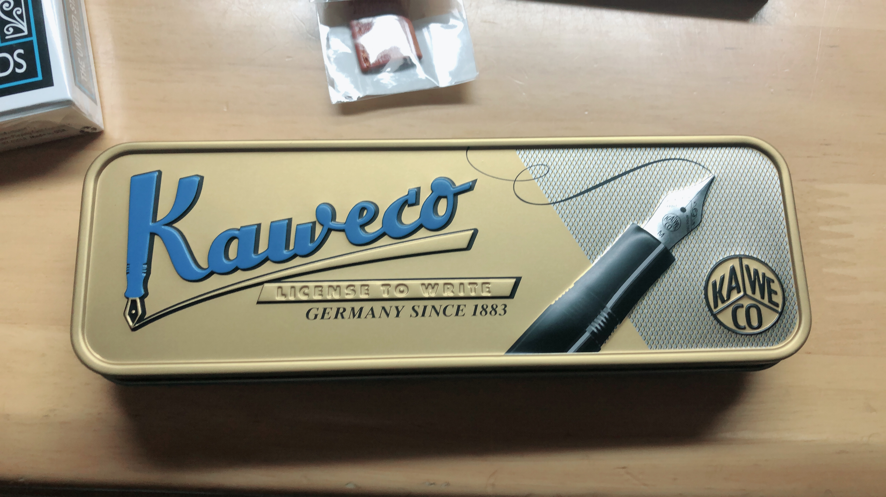

シャープペンシル
〜好きなブランド〜
ステッドラーの製図シャープペンシルが特に好きです。
また、パイロットの木軸シャープ、ぺんてるのシャプペンシルなど値段にかかわらず書き
やすいものをよく使っています。

〜お気に入りのシャープペンシル〜
ステッドラーの925-05や、925-15、パイロットのs20やレグノなどのマイナーなシャープペンシルから、uniのクルトガアドバンスや、パイロットのドクターグリップなどのメジャーなシャープペンシルまで幅広く大好きです。
特にお気に入りなのは、カヴェコのシャープペンシルスペシャルと、パイロットのレグノの二本です。

ボールペン
〜好きなボールペン〜
ボールペンといえばやはりThe王道のゼブラのサラサです。サラサの書き心地と発色はどれだけ高いものでも敵いません
また、パイロットのjuice upは、まず見た目が可愛い、そして、書き心地も発色も最高のペンです。一時期サラサを置いてこのペン一筋だった時もありました。